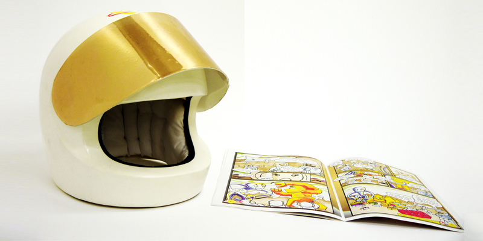

A life-size helmet inspired by a helmet for the LEGO minifigure plays downloadable audio tracks for comics. The helmet acts as a headset for listening to the audio for comics as well as a role-playing toy. Once subscribed to the LEGO audio comic, you'll receive the comic through the post with your activation code to download the audio onto a USB brick. Simply slot the brick into the back of the helmet, put it on and enjoy the exciting LEGO Audio comic experience!
Two buttons on the side of the helmet allow you to skip through pages in the audio tracks.